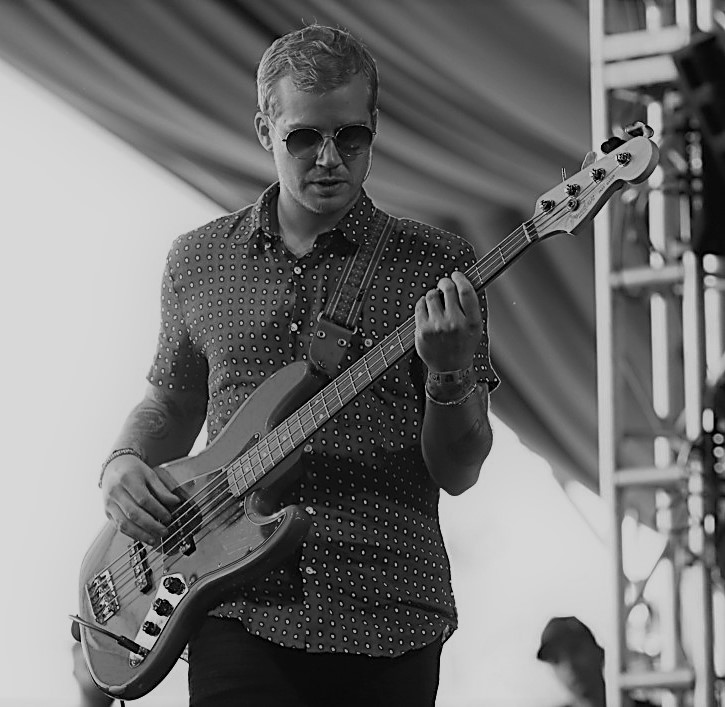

KALEO
About
Kaleo is a Icelandic four man band, their style of music is very blues/folk. They were formed in Mosfellsbær 2012, the band members had all went to the same school which is how they met. The band consists of a lead vocalist/guitarist (JJ Julius Son), drummer (David Antonsson), bass guitarist (Daniel Kristjansson), and finally lead guitarist (Rubin Pollock). Their A/B albumn is one of their most infamous, its sold over 800,000 worldwide and one of their singles "Way down we go" is their highest selling song. It has featured numerous times in many different forms of media such as advertisement and moie trailers etc, their other songs have also featured in the television shows Orange is the New Black, Blindspot, Suits, Vinyl, Grey's Anatomy, Riverdale , Empire, The Leftovers, Frequency, Supergirl, Lucifer, Longmire, The Vampire Diaries, and Frontier. Kaleo have appeared in multiple hit television shows including late night talk shows Conan, Jimmy Kimmel Live!, and Late Night with Seth Meyers. With their song "Way down we go" having sold for over 500,000 in the US it is a fair assessment that Kaleo is very admired and is one of the best bands in their genre.
Band Members
The band members of the music group known as Kaleo are as follows; Jökull Júlíusson, Rubin Pollock, Davíð Antonsson and Daníel Ægir Kristjánsson:


Jökull Júlíusson

Rubin Pollock
Davíð Antonsson

Daníel Ægir Kristjánsson